Example Reduced Graph Powers¶
Some understanding of reduced graph powers can be obtained by looking at examples.
For a simple graph \(G=(V,E)\), we will sometimes write \(|V(G)|\) and \(|E(G)|\) for the number of vertices and edges of \(G\). We assume the graph \(G\) is connected, so the Betti number is given by \(\beta(G)=|E(G)|-|V(G)|+1\). When the graph G is understood from context, we will often use \(v(G)\) and \(e(G)\), or simply \(v\) and \(e\), for the number of vertices and edges of G.
The number of vertices in the reduced graph power \(G^{(k)}\) is
where \(v=|V(G)|\). The number of edges in the reduced graph power \(G^{(k)}\) is
where \(e=|E(G)|\). When the graph \(G\) is understood, will sometimes abbreviate the number of vertices and edges in its reduced graph power by \(v^{(k)} = |V(G^{(k)})|\) and \(e^{(k)} = |E(G^{(k)})|\).
The path graph \(P_n\)¶
A path graph is a graph whose \(n\) vertices can be listed in the order \(0, 1, \ldots , n-1\) such that the edges are \((i, i+1)\) for \(i = 0, 1 \ldots , n-2\). For example,
for n in [2,4,7]:
graphs.PathGraph(n).show(figsize=3,title='P%s:' %(n))
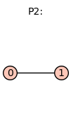
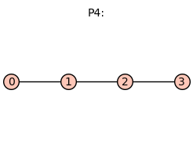
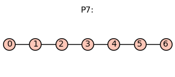
Evidently, \(|V(P_n)|=n\), \(|E(P_n)|=n-1\), and \(\beta(P_n)=0\). The number of vertices of the reduced graph power \(P_n^{(k)}\) is \(|V(P_n^{(k)})|=\binom{n+k-1}{k}\). The number of edges is \(|E(P_n^{(k)})|=(n-1)\binom{n+k-2}{k-1}\). Consequently, the Betti number of the path graph on \(n\) vertices is
Specializing to the case of a dimer (\(k=2\)), we have \(|V(P_n^{(2)})|=\binom{n+1}{2}\), \(|E(P_n^{(2)})|=n(n-1)\), and \(\beta(P_n^{(2)}) = \binom{n-1}{2}\).
The cycle graph \(C_n\)¶
The cycle graph \(C_n\) is a graph whose \(n\) vertices can be listed in the order \(0, 1, \ldots , n\) such that the edges are \((i, i+1)\) for \(i = 0, 1, \ldots , n-2\),
and also \((0,n-1)\). For example, \(C_5\) is
for n in [3,5,12]:
graphs.CycleGraph(n).show(figsize=3,title='K%s:' %(n))
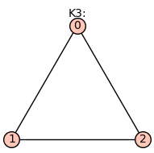
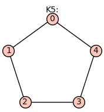
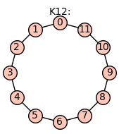
For the cycle graph \(|E(C_n)|=n\) and \(\beta(C_n)=1\).
The number of vertices of the reduced graph power \(C_n^{(k)}\) is \(|V(C_n^{(k)})|=\binom{n+k-1}{k}\). The number of edges is \(|E(C_n^{(k)})|=n\binom{n+k-2}{k-1}\). The Betti number is
Specializing to the case of a dimer (\(k=2\)), we have \(v^{(2)}=\binom{n+1}{2}\), \(e^{(2)}=n^2\), and
The complete graph \(K_n\)¶
The complete graph \(K_n\) is a graph with \(n\) vertices and \(|E(K_n)|=\binom{n}{2}\) edges.
For example, \(K_5\) is
for n in [2,4,7]:
graphs.CompleteGraph(n).show(figsize=3,title='C%s:' %(n))
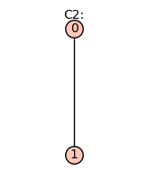
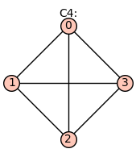
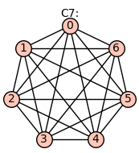
For the complete graph, \(\beta(K_n)=\binom{n-1}{2}=(n-1)(n-2)/2\).
The number of vertices of the reduced graph power \(K_n^{(k)}\) is \(|V(K_n^{(k)})|=\binom{n+k-1}{k}\), the number of edges is \(|E(K_n^{(k)})|=\binom{n}{2}\binom{n+k-2}{k-1}\), and the Betti number is
For a dimer (\(k=2\)), we have \(v^{(2)}=\binom{n+1}{2}\), \(e^{(2)}=\binom{n}{2} n = n^2(n-1)/2\), and
The hypercube graph \(Q_n\)¶
The hypercube graph \(Q_n\) has \(|V(Q_n)|=2^n\) vertices and \(|E(Q_n)|=2^{n-1}n \) edges. For example, \(Q_4\) is
for n in [2,4,5]:
if n>3:
graphs.CubeGraph(n).show(figsize=3,vertex_size=20,vertex_labels=false,title='Q%s:' %(n))
else:
graphs.CubeGraph(n).show(figsize=3,title='Q%s:' %(n))
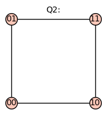
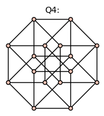
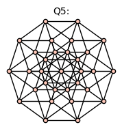
n=3
graphs.CubeGraph(n).show3d(title='Q%s:' %(n))
For the hypercube graph, \(\beta(Q_n)= 2^{n-1} (n-2)+1\).
The number of vertices of the reduced graph power \(Q_n^{(k)}\) is \(|V(Q_n^{(k)})|=\binom{2^n+k-1}{k}\). The number of edges is \(|E(Q_n^{(k)})|=2^{n-1} n \binom{2^n+k-2}{k-1}\). The Betti number is
The reduced graph product of two hypercube graphs, has \(|V(Q_n^{(2)})|=2^{n-1} (2^n+1)\) vertices, \(|E(Q_n^{(2)})| = 2^{2n-1} n\) edges, and Betti number
In particular, \(\beta(Q_2^{(2)}) = 7\) and \(\beta(Q_3^{(2)}) = 61\).
The bipartite graph \(K_{n,m}\)¶
The complete bipartite graph or biclique, denoted by \(K_{n,m}\),
is a bipartite graph where the vertices are partitioned into two sets. Every vertex of the first set, \(\{0, 1, \ldots, n-1\}\), is connected to every vertex of the second set, \(\{n, n+1, \ldots, n+m-1\}\).
graphs.CompleteBipartiteGraph(3,4).show(figsize=3,title='K%s,%s:' %(3,4))
graphs.CompleteBipartiteGraph(5,7).show(figsize=4,title='K%s,%s:' %(5,7))
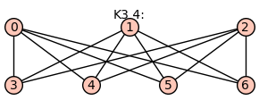
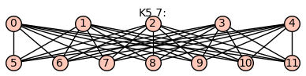
The complete bipartite graph has has \(|V(K_{n,m})|=n+m\) vertices, \(|E(K_{n,m})|=nm \) edges, and Betti number
The number of vertices of the reduced graph power \(K_{n,m}^{(k)}\) is \(|V(K_{n,m}^{(k)})|=\binom{n+m+k-1}{k}\). The number of edges is \(|E(K_{n,m}^{(k)})|=nm\binom{n+m+k-2}{k-1}\). This gives the Betti number
Specializing to the case of a dimer (\(k=2\)), we have \(v^{(2)}= \binom{n+m+1}{2}\), \(e^{(2)}=nm (n+m)\), and